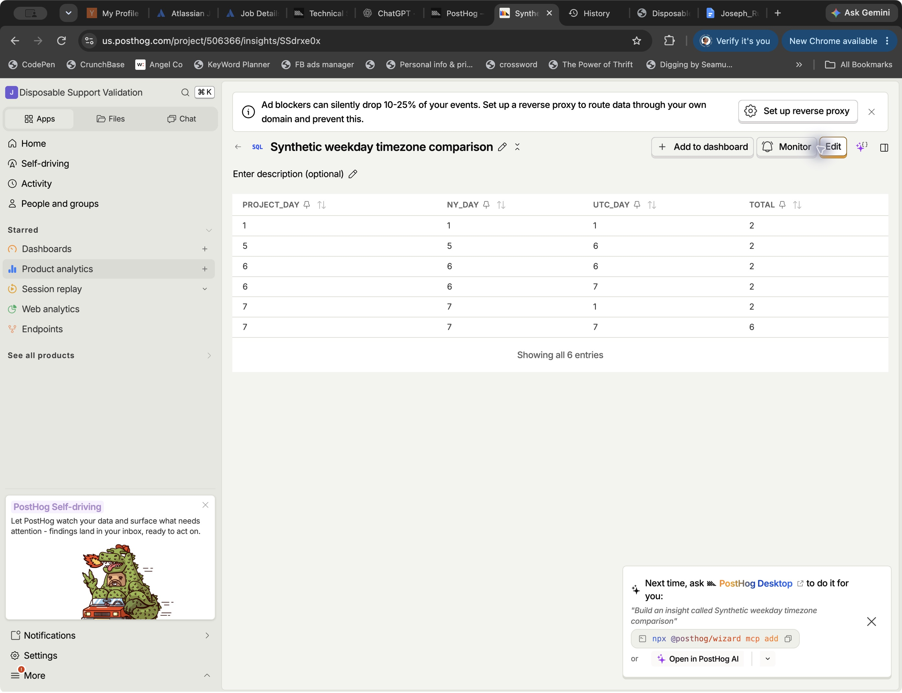
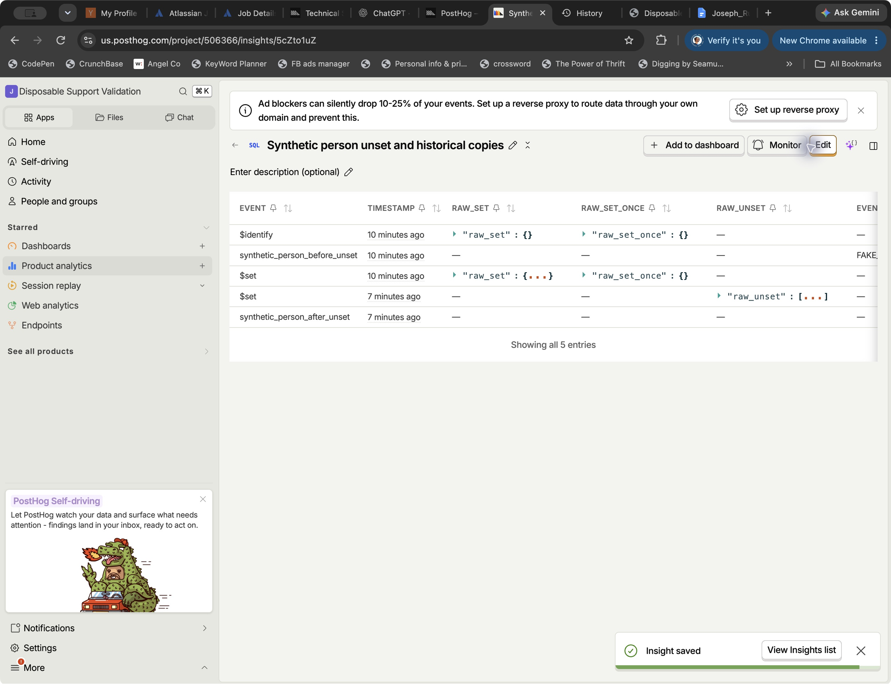

PostHog Technical Support Engineer Supplement
-
Can I break down an insight by weekday?

Download GIF ↓Live disposable project · UI checkpoints with pauses trimmed Yes. In Trends, select the event, choose Total count, and add a SQL expression breakdown:
toDayOfWeek(timestamp)Choose Bar chart under Total value for one total per weekday across the selected period. The Bar chart under Time series keeps separate time buckets.
Monday is 1; Sunday is 7. The expression used the project timezone automatically in the tested project. To pin a different timezone:
toDayOfWeek(toTimeZone(timestamp, 'America/New_York'))Use complete local weeks and align the date-range boundaries with the intended timezone. DST still changes a day's elapsed hours if you're comparing hourly rates.
Verified liveWalkthrough, counts, and DST checks
The actual UI steps
The walkthrough opens a new Trends insight, adds the SQL breakdown, and selects the period-total bar display. GIFs use real UI checkpoints with pauses trimmed, rather than a continuous screen recording.
16 known timestamps. Two DST transitions.
The dataset covers New York midnights, the March 8 spring-forward gap, and both occurrences of 01:30 on November 1. JavaScript Intl and Python zoneinfo independently checked the expected groups.
Expected and observed totals, Monday through Sunday Timezone Mon Tue Wed Thu Fri Sat Sun America/New_York 2 0 0 0 2 4 8 UTC 4 0 0 0 0 4 8 The plain expression matched explicit New York conversion. Explicit UTC conversion changed the near-midnight groups. The live aggregate groups matched all 16 inputs; each live
case_idwas not separately asserted.
Inspect the timezone query ↗ -
What is the client capture limit? Can I increase it?

Download GIF ↓Local SDK test · Mocked HTTP and controlled clock, not a cloud load test “This capture call is ignored due to client rate limiting.”
The tested SDK versions use a 100-event token bucket, refilling at 10 events/second. Excess calls are dropped before the send queue, not retried later.
To raise it, add this to your existing
posthog.initconfiguration:rate_limiting: { events_per_second: 20, events_burst_limit: 200 }For a video player, first check progress callback frequency and duplicate listeners. Capture milestones or throttle progress events if that gives you the data you need.
The bucket can survive reloads with persistence enabled. It is not an application-wide quota across all users or tabs. Changing it does not change server quotas or billing limits.
SDK + local browserDefault limits, custom limits, persistence
Public initialization and capture APIs
Tests execute both published SDKs in JSDOM with fake HTTP and a controlled clock. These results verify client behavior; they do not establish cloud ingestion throughput.
Same results in 1.444.3 and 1.444.4 Configuration Immediate accepted Next 5 calls Accepted after 1s Default 100 Dropped 10 20/s, burst 200 200 Dropped 20 Long refills capped at the configured burst. The warning event bypassed its own client limit. Persisted storage survived a simulated reload; recreating memory persistence reset the bucket. The GIF uses a fresh persistence namespace for each configuration: increasing a limit does not necessarily refill an existing empty bucket immediately.
Two simulated contexts are not a real concurrent-storage test. No cloud load test was run. The limits above are client checks, not promises about end-to-end delivery.
-
How do I remove an accidentally captured PII property?

Download GIF ↓Live synthetic profile · Property removal, not historical-data erasure Stop sending it first. Remove it from the affected person's profile in the UI, or call this in the correct user's SDK context:
posthog.unsetPersonProperties('property_name')This removes the current profile property. The SDK helper can itself be rate-limited; verify ingestion. It does not erase historical copies. Check event properties, event-time person properties, recordings, exports, and downstream destinations.
If deletion must include the person's events, use the person deletion endpoint with
delete_events=true. Recordings require the separatedelete_recordings=trueflag. Confirm which history can be deleted first.Event cleanup is asynchronous. Verify the matching deletion-status record and affected queries. For removal of one historical property while preserving other analytics, confirm a supported remediation path with PostHog support. Profile disappearance alone does not establish complete erasure or GDPR compliance.
Unset verified liveBefore, after, history, and deletion status
A synthetic property, a retained field, and an event copy
The original live check set
synthetic_pii=FAKE_PII_TEST_ONLYandkeep=KEEP_TEST_ONLY. A separate event deliberately heldFAKE_EVENT_COPY_TEST_ONLY.The GIF repeats profile-property removal through the UI on a separate synthetic person using
FAKE_GIF_TEST_ONLY. It then turns off Hide null values and confirmskeep=KEEP_GIF_TEST_ONLYremains. No real person data is used.In the original SDK unset test, the profile UI retained
keepand stopped displayingsynthetic_pii. Hide null values was enabled in that original screenshot; raw key absence was not separately asserted before person deletion.
Inspect the historical copies ↗DELETE /api/projects/{project_id}/persons/{person_uuid}/?delete_events=trueFor recordings, also include
delete_recordings=true. Omit flags you do not want: the inspected single-person deletion source checks query-parameter presence, sodelete_events=falseis not a safe way to disable it.unsetPersonPropertiesis ignored whenperson_profilesisnever.A documentation conflict worth checking
The person-properties docs say raw
Read the dated storage announcement ↗$setand$set_onceinstructions are not stored on events. The October 27 storage announcement describes 60-day retention starting November 30, 2026. The live history check exposed a raw$setobject. Do not assume those copies are absent.


Tests, versions, and limitations
Source
Published posthog-js 1.444.3 and 1.444.4. Backend snapshot 4ca76d4. The deployed Cloud commit was not verified.
Local
17 passing tests. Real SDK code, mocked transport, controlled clocks. Node 26.7.0, npm 11.19.0, Python 3.9.6. SDK artifact hashes and the lockfile are included.
Live
Synthetic events in a disposable US Cloud project. Weekday totals, timezone behavior, profile unset, historical copies, and queued deletion were inspected through the browser.
Not established
Completed event erasure, recording deletion, external-copy removal, real concurrent-tab coordination, or broad older-SDK compatibility.
npm ci --no-audit --no-fund
npm test
node evidence.mjs
python3 verify-reference.pyPrepared with AI assistance. Source findings, mock-based tests, and live observations are identified separately so the evidence can be checked independently.